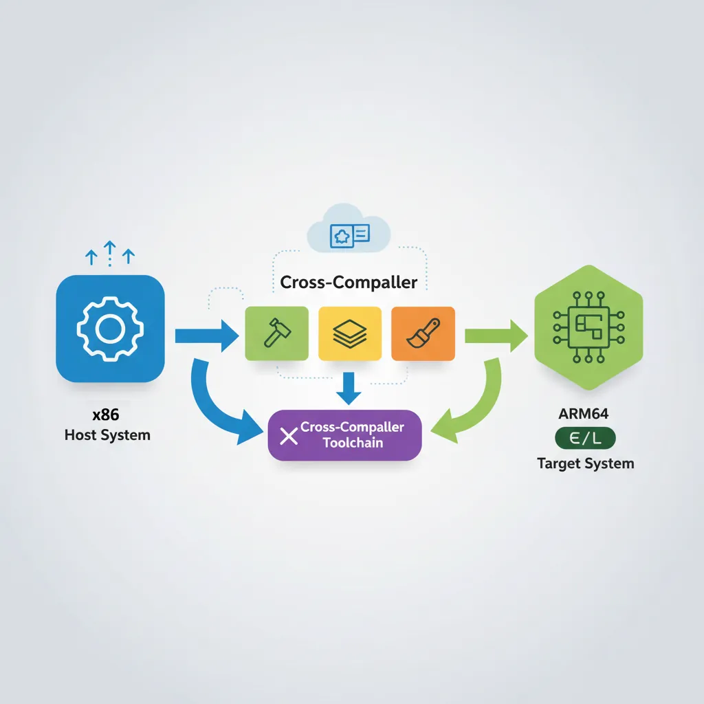
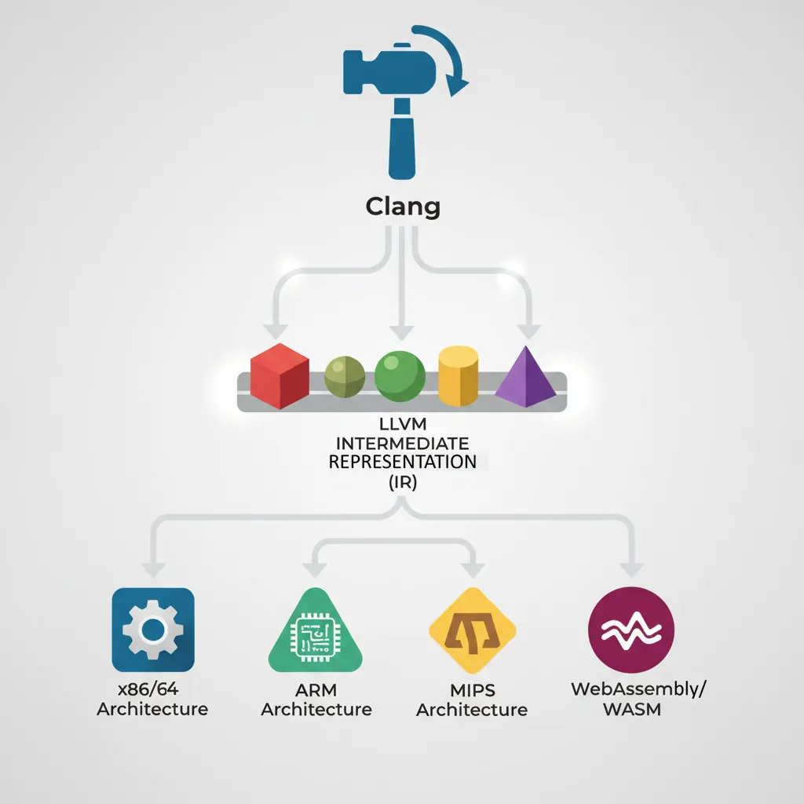
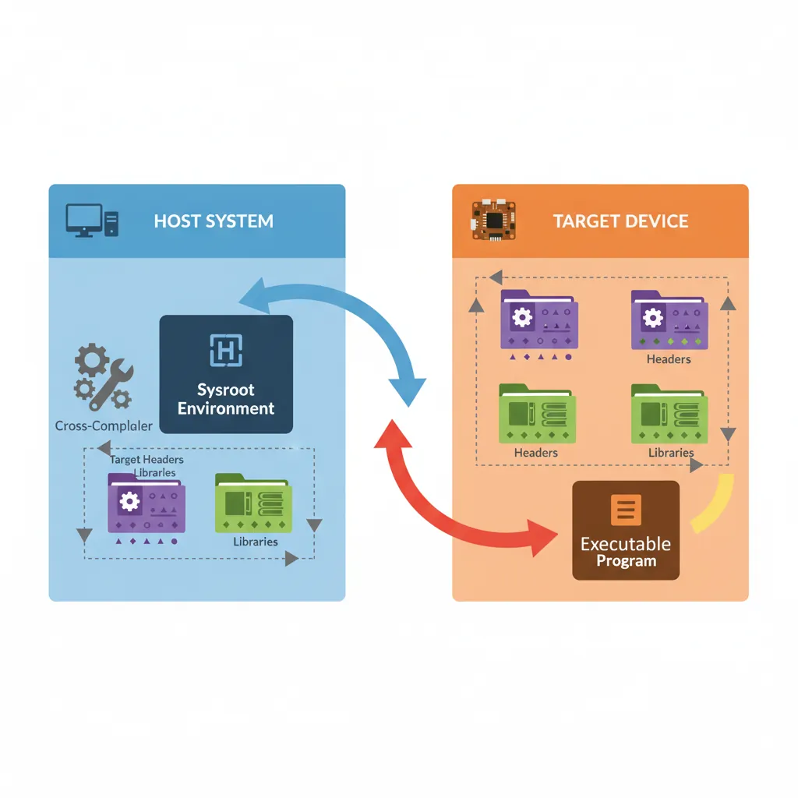
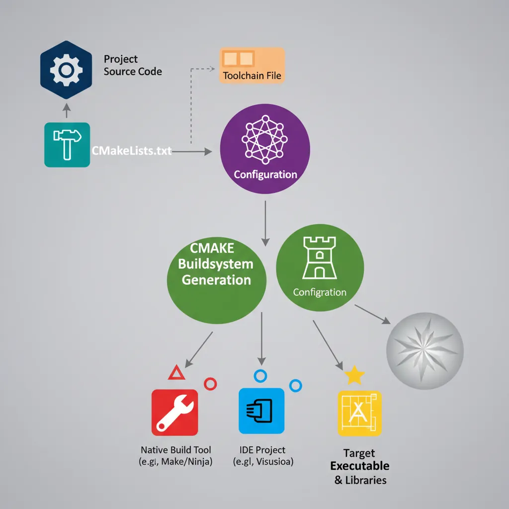
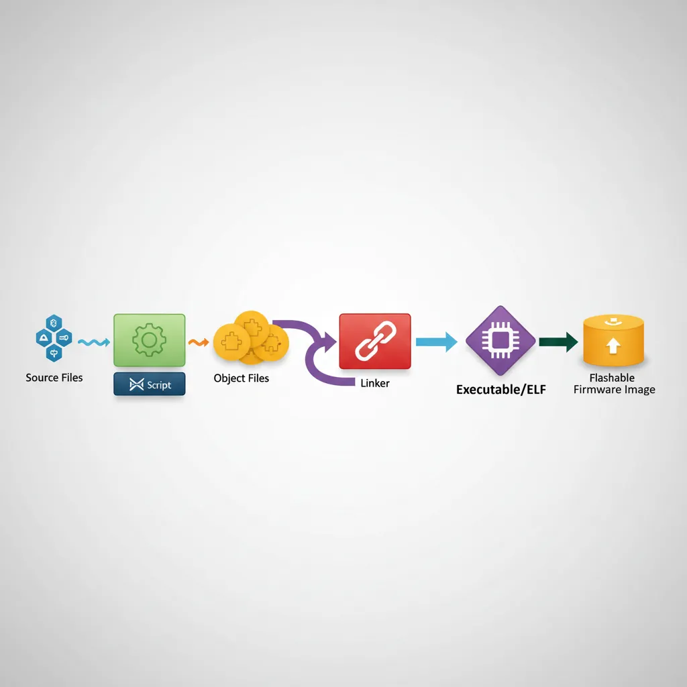

Toolchain Taxonomy
ARM Assembly Mastery
Architecture History & Core Concepts
ARMv1→v9, RISC philosophyARM32 Instruction Set Fundamentals
ARM vs Thumb, CPSRAArch64 Registers, Addressing & Data Movement
X/W regs, addressing modesArithmetic, Logic & Bit Manipulation
ADD/SUB, bitfield, CLZBranching, Loops & Conditional Execution
Branch types, jump tablesStack, Subroutines & AAPCS
Calling conventionsMemory Model, Caches & Barriers
Weak ordering, DMB/DSB/ISBNEON & Advanced SIMD
Vector ops, intrinsicsSVE & SVE2 Scalable Vectors
Predicate regs, HPC/MLFloating-Point & VFP Instructions
IEEE-754, rounding modesException Levels, Interrupts & Vectors
EL0–EL3, GICMMU, Page Tables & Virtual Memory
Stage-1 translationTrustZone & Security Extensions
Secure monitor, TF-ACortex-M Assembly & Bare-Metal
NVIC, SysTick, linker scriptsCortex-A System Programming & Boot
EL3→EL1, MMU setup, PSCIApple Silicon & macOS ABI
ARM64e PAC, Mach-O, dyldInline Assembly & C Interop
Constraints, clobbersPerformance Profiling & Micro-Opt
Pipeline hazards, PMUReverse Engineering & Binary Analysis
ELF, disassembly, CFRBuilding a Bare-Metal OS Kernel
Bootloader, UART, schedulerARM Microarchitecture Deep Dive
OOO pipelines, branch predictVirtualization Extensions
EL2 hypervisor, stage-2, KVMDebugging & Tooling Ecosystem
GDB, OpenOCD/JTAG, ETM/ITMLinkers, Loaders & Binary Format Internals
ELF deep dive, relocations, PICCross-Compilation & Build Systems
GCC/Clang toolchains, CMake, firmware genARM in Real Systems
Android, FreeRTOS/Zephyr, U-Boot, TF-ASecurity Research & Exploitation
ASLR, PAC attacks, ROP/JOP, kernel exploitEmerging ARMv9 & Future Directions
MTE, SME, confidential compute, AI accelaarch64-linux-gnu) is the address label specifying exactly which kitchen you're shipping to. A CMake toolchain file is a master instruction sheet that tells every sous chef (compiler, linker, assembler) exactly which translation rules to follow. And CI pipelines are like having a robot taste-tester that runs QEMU to try your recipe in a simulated version of their kitchen before you ship.
aarch64-linux-gnu-gcc — Linux user-space with glibc (most common)aarch64-linux-musl-gcc — Linux user-space with musl libc (static-friendly)aarch64-none-elf-gcc — Bare-metal, no OS, no C libraryaarch64-none-linux-gnu-gcc — ARM's own GNU toolchain distributionclang --target=aarch64-linux-gnu — LLVM Clang, same target triplesTriple format:
<arch>-<vendor>-<os>-<libc/ABI>
GCC Cross-Toolchain Setup

# ── Install GCC cross-toolchain on Ubuntu/Debian ──
sudo apt-get install -y \
gcc-aarch64-linux-gnu \
g++-aarch64-linux-gnu \
binutils-aarch64-linux-gnu \
libgcc-12-dev-arm64-cross \
linux-libc-dev-arm64-cross
# Verify installation:
aarch64-linux-gnu-gcc --version
# aarch64-linux-gnu-gcc (Ubuntu 12.3.0-6ubuntu4) 12.3.0
# ── Build a simple program ──
cat > hello.c <<'EOF'
#include <stdio.h>
int main(void) { printf("Hello ARM64!\n"); return 0; }
EOF
aarch64-linux-gnu-gcc -O2 -march=armv8-a -o hello hello.c
file hello
# hello: ELF 64-bit LSB pie executable, ARM aarch64, version 1 (SYSV)
# Run on x86 using QEMU user-mode emulation:
sudo apt-get install -y qemu-user
qemu-aarch64 -L /usr/aarch64-linux-gnu ./hello
# Hello ARM64!# ── ARM Architecture-specific flags ──
# Target a specific Cortex core for optimal code generation:
aarch64-linux-gnu-gcc \
-march=armv8.2-a+crypto+fp16+rcpc \ # ARMv8.2 + crypto extensions
-mtune=cortex-a78 \ # Tune scheduling for A78 pipeline
-O3 -fvectorize \
-o app app.c
# ARMv9 / Neoverse:
aarch64-linux-gnu-gcc \
-march=armv9-a+sve2 \ # ARMv9 + SVE2
-mtune=neoverse-n2 \
-O3 -o server_app server_app.c
# Check what features the compiler knows about:
aarch64-linux-gnu-gcc -march=armv8-a -Q --help=target | grep -E "march|mtune|mfpu"Clang/LLVM Cross-Compilation

# ── LLVM Clang cross-compilation (single binary, multi-target) ──
sudo apt-get install -y clang lld llvm
# Clang uses --target= flag instead of a prefixed binary:
clang \
--target=aarch64-linux-gnu \
-march=armv8.2-a \
--sysroot=/usr/aarch64-linux-gnu \
-fuse-ld=lld \
-O2 -o hello hello.c
# Key difference: Clang links against host libraries by default.
# Always explicitly set --sysroot for cross-compilation.
# Verify target:
llvm-readobj --file-headers hello | grep Machine
# Machine: AArch64# ── Clang bare-metal (no libc, no OS) ──
clang \
--target=aarch64-none-elf \
-march=armv8-a \
-nostdlib -nostartfiles -ffreestanding \
-fuse-ld=lld \
-T linker.ld \
-O2 -o kernel.elf boot.S kernel.c
# Generate assembly listing to inspect output:
clang \
--target=aarch64-none-elf \
-march=armv8-a -O2 \
-S -masm=att \ # AT&T syntax (optional, GAS-compatible)
-o kernel.s kernel.cSysroots & ABI Selection

# ── Build a proper sysroot for cross-compilation ──
# Option 1: Use the system sysroot from the Debian cross-tools package
ls /usr/aarch64-linux-gnu/
# bin/ include/ lib/ lib64/ libexec/ share/
# Option 2: Extract sysroot from a Raspberry Pi OS rootfs image
sudo apt-get install -y debootstrap qemu-debootstrap
sudo qemu-debootstrap \
--arch=arm64 \
bookworm \
/opt/aarch64-sysroot \
http://deb.debian.org/debian
# Compile against custom sysroot:
aarch64-linux-gnu-gcc \
--sysroot=/opt/aarch64-sysroot \
-I/opt/aarch64-sysroot/usr/include \
-L/opt/aarch64-sysroot/usr/lib/aarch64-linux-gnu \
-O2 -o app app.c# ── ABI variants on ARM64 ──
# AAPCS64 (default): hard-float, 64-bit pointers, LP64 data model
# ILP32 (AArch64-ILP32 / "ARM64_32"): 32-bit pointers on 64-bit ISA (Apple watchOS)
# Soft-float: no FP hardware (rare on AArch64, common on ARM32)
# Check data model of existing binary:
aarch64-linux-gnu-objdump -d app | head -5
aarch64-linux-gnu-readelf -h app | grep "Class\|Data\|OS"
# Class: ELF64
# Data: 2's complement, little endian
# OS/ABI: UNIX - System VCMake Toolchain Files

# aarch64-linux-gnu.cmake — CMake toolchain file for Linux target
cat > aarch64-linux-gnu.cmake <<'EOF'
# Cross-compilation toolchain for AArch64 Linux (GCC)
set(CMAKE_SYSTEM_NAME Linux)
set(CMAKE_SYSTEM_PROCESSOR aarch64)
# Toolchain prefix
set(CROSS_COMPILE aarch64-linux-gnu-)
set(CMAKE_C_COMPILER ${CROSS_COMPILE}gcc)
set(CMAKE_CXX_COMPILER ${CROSS_COMPILE}g++)
set(CMAKE_ASM_COMPILER ${CROSS_COMPILE}gcc)
set(CMAKE_OBJCOPY ${CROSS_COMPILE}objcopy)
set(CMAKE_STRIP ${CROSS_COMPILE}strip)
# Sysroot
set(CMAKE_SYSROOT /usr/aarch64-linux-gnu)
set(CMAKE_FIND_ROOT_PATH /usr/aarch64-linux-gnu)
# Search rules: headers/libs from target, programs from host
set(CMAKE_FIND_ROOT_PATH_MODE_PROGRAM NEVER)
set(CMAKE_FIND_ROOT_PATH_MODE_LIBRARY ONLY)
set(CMAKE_FIND_ROOT_PATH_MODE_INCLUDE ONLY)
set(CMAKE_FIND_ROOT_PATH_MODE_PACKAGE ONLY)
# Architecture flags
set(CMAKE_C_FLAGS_INIT "-march=armv8-a -mtune=cortex-a72")
set(CMAKE_CXX_FLAGS_INIT "-march=armv8-a -mtune=cortex-a72")
EOF
# Use the toolchain file:
cmake -B build \
-DCMAKE_TOOLCHAIN_FILE=aarch64-linux-gnu.cmake \
-DCMAKE_BUILD_TYPE=Release \
..
cmake --build build -j$(nproc)# aarch64-none-elf.cmake — CMake toolchain file for bare-metal
cat > aarch64-none-elf.cmake <<'EOF'
set(CMAKE_SYSTEM_NAME Generic) # "Generic" = no OS
set(CMAKE_SYSTEM_PROCESSOR aarch64)
set(CMAKE_C_COMPILER aarch64-none-elf-gcc)
set(CMAKE_CXX_COMPILER aarch64-none-elf-g++)
set(CMAKE_ASM_COMPILER aarch64-none-elf-gcc)
# Tell CMake linking bare-metal programs works without a test link step:
set(CMAKE_TRY_COMPILE_TARGET_TYPE STATIC_LIBRARY)
set(CMAKE_C_FLAGS_INIT "-march=armv8-a -ffreestanding -nostdlib")
set(CMAKE_EXE_LINKER_FLAGS_INIT "-T${CMAKE_SOURCE_DIR}/linker.ld -nostartfiles")
EOFBare-Metal Firmware Build

# Complete Makefile for bare-metal AArch64 kernel + firmware image
cat > Makefile <<'EOF'
CROSS := aarch64-none-elf-
CC := $(CROSS)gcc
LD := $(CROSS)ld
OBJCOPY := $(CROSS)objcopy
OBJDUMP := $(CROSS)objdump
ARCH_FLAGS := -march=armv8-a -mcpu=cortex-a72
OPT_FLAGS := -O2 -pipe
WARN_FLAGS := -Wall -Wextra -Wshadow
C_FLAGS := $(ARCH_FLAGS) $(OPT_FLAGS) $(WARN_FLAGS) \
-ffreestanding -nostdlib -fno-stack-protector \
-fno-common -ffunction-sections -fdata-sections
SRCS := boot.S uart.S vectors.S context.S kernel.c mm.c sched.c
OBJS := $(patsubst %.S,%.o,$(patsubst %.c,%.o,$(SRCS)))
.PHONY: all clean flash
all: kernel.elf kernel.bin kernel.lst
kernel.elf: $(OBJS) linker.ld
$(LD) -T linker.ld --gc-sections -o $@ $(OBJS)
kernel.bin: kernel.elf
$(OBJCOPY) -O binary $< $@
kernel.lst: kernel.elf
$(OBJDUMP) -D $< > $@
%.o: %.c
$(CC) $(C_FLAGS) -c -o $@ $<
%.o: %.S
$(CC) $(C_FLAGS) -c -o $@ $<
clean:
rm -f *.o kernel.elf kernel.bin kernel.lst
flash: kernel.bin
openocd -f board/my_board.cfg -c "program kernel.bin 0x40000000 verify reset exit"
EOF# linker.ld — minimal AArch64 bare-metal linker script
cat > linker.ld <<'EOF'
OUTPUT_FORMAT("elf64-littleaarch64")
OUTPUT_ARCH(aarch64)
ENTRY(_start)
MEMORY {
RAM (rwx) : ORIGIN = 0x40000000, LENGTH = 128M
}
SECTIONS {
. = 0x40000000;
.text.boot : { *(.text.boot) } /* boot.S must be first */
.text : { *(.text .text.*) }
.rodata : { *(.rodata .rodata.*) }
. = ALIGN(4096);
.data : { *(.data .data.*) }
. = ALIGN(16);
.bss (NOLOAD) : {
_bss_start = .;
*(.bss .bss.*)
*(COMMON)
_bss_end = .;
}
. = ALIGN(4096);
_heap_start = .;
. = ORIGIN(RAM) + LENGTH(RAM) - 0x8000;
_stack_top = .; /* 32 KB stack at end of RAM */
}
EOFCI Pipeline for ARM64
# .github/workflows/arm64-build.yml — GitHub Actions cross-build
cat > .github/workflows/arm64-build.yml <<'EOF'
name: ARM64 Build & Test
on: [push, pull_request]
jobs:
build-linux:
runs-on: ubuntu-22.04
steps:
- uses: actions/checkout@v4
- name: Install cross-toolchain
run: |
sudo apt-get update -qq
sudo apt-get install -y gcc-aarch64-linux-gnu qemu-user
- name: Build
run: |
aarch64-linux-gnu-gcc -O2 -march=armv8-a \
-o app src/main.c src/lib.c
file app
- name: Test with QEMU user-mode
run: |
qemu-aarch64 -L /usr/aarch64-linux-gnu ./app
build-bare-metal:
runs-on: ubuntu-22.04
steps:
- uses: actions/checkout@v4
- name: Install bare-metal toolchain
run: |
sudo apt-get update -qq
sudo apt-get install -y gcc-aarch64-linux-gnu binutils-aarch64-linux-gnu \
qemu-system-arm
- name: Build kernel
run: make -C firmware/ CROSS=aarch64-linux-gnu-
- name: Boot test in QEMU
run: |
timeout 10 qemu-system-aarch64 \
-machine virt -cpu cortex-a57 -m 64M \
-kernel firmware/kernel.elf \
-serial stdio -display none \
-no-reboot
echo "QEMU boot test passed"
EOFCase Study: Cross-Compilation in the Real World
Yocto Project & the Automotive Industry
Modern cars contain 100+ ECUs (Electronic Control Units), many running on ARM Cortex-A and Cortex-R processors. The Yocto Project is the dominant build system for creating custom embedded Linux distributions, and cross-compilation is its foundation. Companies like Tesla, Toyota, and BMW use Yocto to cross-compile entire Linux distributions — kernel, drivers, middleware, and applications — from x86 build servers targeting AArch64 SoCs like the TI Jacinto (TDA4VM) and NXP S32G.
A typical automotive Yocto build cross-compiles 5,000+ packages from source, producing a complete bootable image. The build system manages multiple sysroots (one per target architecture), resolves cross-compilation dependencies automatically, and generates SDK tarballs so application developers can cross-compile without setting up the full Yocto environment. Build times that would take 48+ hours natively on ARM hardware complete in 2-3 hours on a 64-core x86 build server.
From Manual Makefiles to Modern Build Systems (1990–2024)
The history of ARM cross-compilation mirrors the evolution of embedded software engineering:
1990s — The Wild West: ARM's own SDT (Software Development Toolkit) ran on Windows only. Cross-compiling meant purchasing expensive proprietary tools from ARM Ltd or Metrowerks CodeWarrior. Build scripts were hand-written shell scripts with hardcoded paths. No package managers, no sysroot concept — developers manually copied headers from target boards.
2000s — GCC Matures: The ARM GCC port became production-quality. Buildroot (2001) and OpenEmbedded (2003, later becoming Yocto's foundation) automated cross-compilation of entire Linux distributions. ARM released their own GNU toolchain packages. CMake 2.6 (2008) introduced the CMAKE_TOOLCHAIN_FILE concept that standardized cross-compilation configuration.
2010s — LLVM Revolution: Clang's multi-target architecture eliminated the need for separate compiler binaries per target. A single clang binary could target AArch64, ARM32, x86, RISC-V, and more. Linaro (founded 2010) standardized ARM toolchain releases with quarterly GNU Toolchain packages. Docker containers made reproducible cross-compilation environments trivial to share.
2020s — Cloud-Scale Cross-Builds: GitHub Actions and GitLab CI made ARM64 cross-compilation a standard CI/CD step. Rust's cross tool automated Docker-based cross-compilation. The Arm GNU Toolchain replaced Linaro's releases. Meson and Bazel introduced declarative cross-compilation configuration that surpassed CMake's approach in clarity. QEMU user-mode emulation became fast enough for test suites, and Apple's Rosetta 2 proved that binary translation could be nearly transparent.
Hands-On Exercises
Cross-Compile & Run with QEMU User-Mode
Install the GCC AArch64 cross-toolchain and QEMU user-mode emulator. Write a C program that prints your system's sizeof() for common types (int, long, pointer, double) and the endianness. Cross-compile it, run with qemu-aarch64, and compare output to native x86 compilation.
# Install tools
sudo apt-get install -y gcc-aarch64-linux-gnu qemu-user
# Create test program
cat > abi_probe.c <<'EOF'
#include <stdio.h>
#include <stdint.h>
int main(void) {
printf("=== ABI Probe ===\n");
printf("sizeof(int) = %zu\n", sizeof(int));
printf("sizeof(long) = %zu\n", sizeof(long));
printf("sizeof(void*) = %zu\n", sizeof(void*));
printf("sizeof(double) = %zu\n", sizeof(double));
printf("sizeof(size_t) = %zu\n", sizeof(size_t));
// Endianness check
uint32_t val = 0x01020304;
uint8_t *p = (uint8_t *)&val;
printf("Endian: %s\n",
p[0] == 0x04 ? "Little-endian" : "Big-endian");
return 0;
}
EOF
# Cross-compile and run
aarch64-linux-gnu-gcc -O2 -o abi_probe_arm64 abi_probe.c
qemu-aarch64 -L /usr/aarch64-linux-gnu ./abi_probe_arm64
# Compare with native
gcc -O2 -o abi_probe_x86 abi_probe.c
./abi_probe_x86Expected Learning: Both architectures use LP64 data model (long=8, pointer=8), little-endian. Differences appear in alignment and struct padding.
CMake Multi-Target Build System
Create a CMake project with a simple math library (add, multiply, dot product) that builds for both native x86 and cross-compiled AArch64. Write two toolchain files (GCC and Clang) and compare the generated assembly for the dot product function.
# Project structure
mkdir -p cross-cmake/{src,toolchains,build-x86,build-arm64-gcc,build-arm64-clang}
# Create CMakeLists.txt
cat > cross-cmake/CMakeLists.txt <<'EOF'
cmake_minimum_required(VERSION 3.20)
project(MathLib C)
add_library(mathlib STATIC src/mathlib.c)
target_include_directories(mathlib PUBLIC src/)
add_executable(bench src/bench.c)
target_link_libraries(bench mathlib)
# Generate assembly listing
add_custom_command(TARGET bench POST_BUILD
COMMAND ${CMAKE_OBJDUMP} -d $<TARGET_FILE:bench> > bench.lst
COMMENT "Generating disassembly listing"
)
EOF
# Build native, then cross-compile with both toolchains
cd cross-cmake
cmake -B build-x86 -DCMAKE_BUILD_TYPE=Release
cmake --build build-x86
cmake -B build-arm64-gcc \
-DCMAKE_TOOLCHAIN_FILE=toolchains/aarch64-linux-gnu.cmake
cmake --build build-arm64-gcc
cmake -B build-arm64-clang \
-DCMAKE_TOOLCHAIN_FILE=toolchains/aarch64-clang.cmake
cmake --build build-arm64-clang
# Compare generated assembly for dot_product():
diff <(grep -A30 'dot_product' build-arm64-gcc/bench.lst) \
<(grep -A30 'dot_product' build-arm64-clang/bench.lst)Expected Learning: GCC and Clang generate different instruction sequences for the same function. Clang often auto-vectorizes more aggressively with NEON/ASIMD instructions.
Docker-Based Reproducible Cross-Compilation Pipeline
Create a complete Docker-based cross-compilation environment that builds a bare-metal AArch64 kernel image, runs it in QEMU system-mode inside the container, captures UART output, and verifies it passes a boot test. Package it as a GitHub Actions workflow.
# Dockerfile for reproducible ARM64 cross-compilation
cat > Dockerfile.arm64-builder <<'EOF'
FROM ubuntu:22.04 AS builder
ENV DEBIAN_FRONTEND=noninteractive
# Install cross-toolchain + QEMU
RUN apt-get update && apt-get install -y \
gcc-aarch64-linux-gnu \
binutils-aarch64-linux-gnu \
qemu-system-arm \
make cmake \
&& rm -rf /var/lib/apt/lists/*
WORKDIR /build
COPY . .
# Build bare-metal firmware
RUN make CROSS=aarch64-linux-gnu- kernel.bin
# Boot test: run QEMU, capture UART output, check for success string
RUN timeout 10 qemu-system-aarch64 \
-machine virt -cpu cortex-a72 -m 64M \
-kernel kernel.elf \
-serial file:/tmp/uart.log \
-display none -no-reboot || true \
&& grep -q "Boot successful" /tmp/uart.log \
&& echo "BOOT TEST PASSED"
EOF
# Build and run the Docker image
docker build -f Dockerfile.arm64-builder -t arm64-firmware .
# Extract artifacts
docker create --name extract arm64-firmware
docker cp extract:/build/kernel.bin ./kernel.bin
docker cp extract:/build/kernel.elf ./kernel.elf
docker rm extractExpected Learning: Docker containers ensure every developer and CI runner uses identical toolchain versions, sysroots, and QEMU releases — eliminating "works on my machine" across the entire team.
Conclusion & Next Steps
A well-structured cross-compilation setup removes the "works on my machine" problem from ARM64 firmware and embedded Linux development. The CMake toolchain file approach is especially valuable: it encodes all target-specific knowledge in one place, making CI pipelines, Docker containers, and new developer onboarding trivially reproducible.
From the Yocto Project building entire automotive Linux distributions to Docker-based CI pipelines running QEMU boot tests, cross-compilation is the backbone of modern ARM development. The evolution from hand-written Makefiles with hardcoded paths to declarative toolchain files and multi-target Clang binaries reflects the broader maturation of embedded software engineering. Mastering these tools turns any x86 workstation into a full ARM development environment.